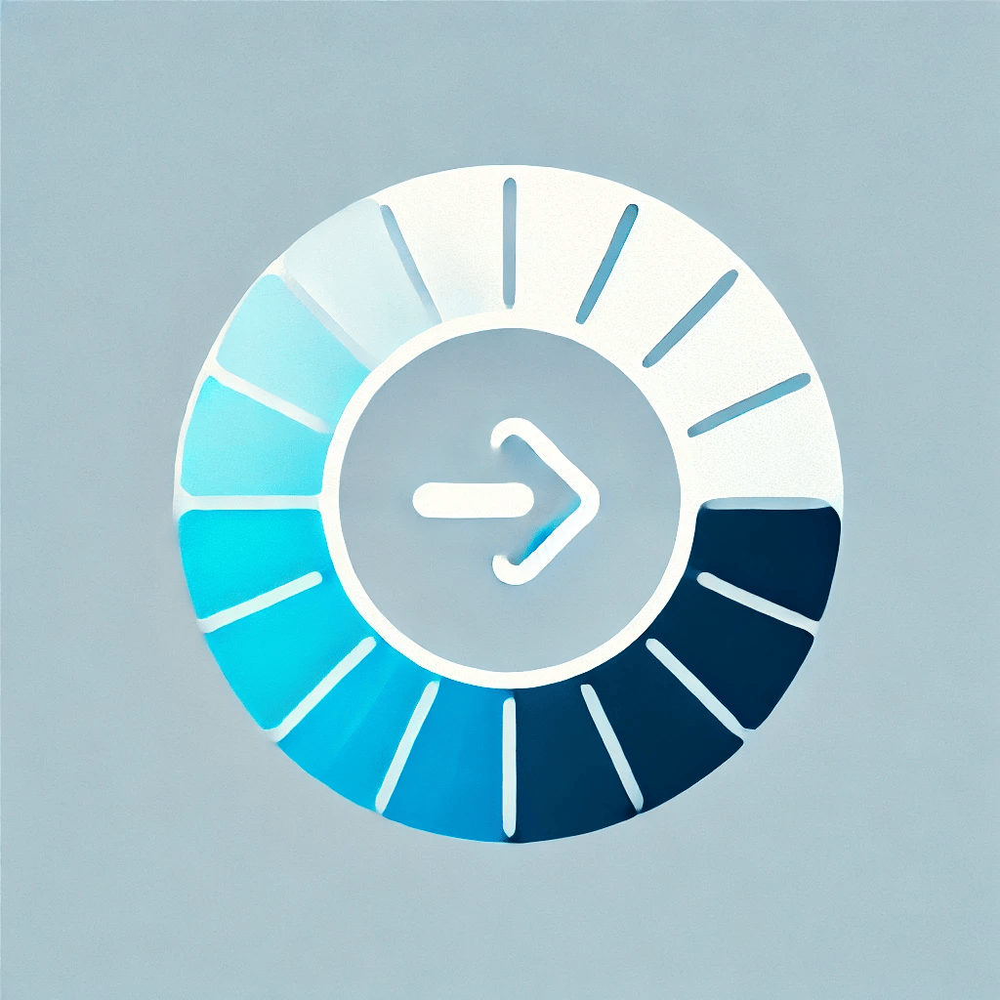

Key Features
- Add, edit, and delete tasks effortlessly.
-  Mark tasks as completed to keep track of progress.
- Set reminders to never miss a deadline.
- Fully responsive design for any device.
- Track task completion stats over time.
- Collaborate with others by sharing task lists.